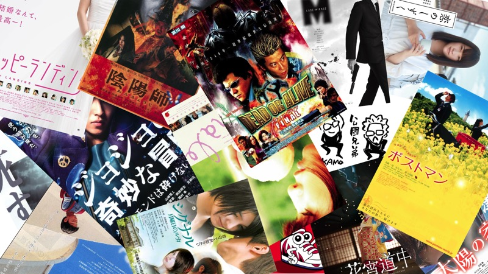
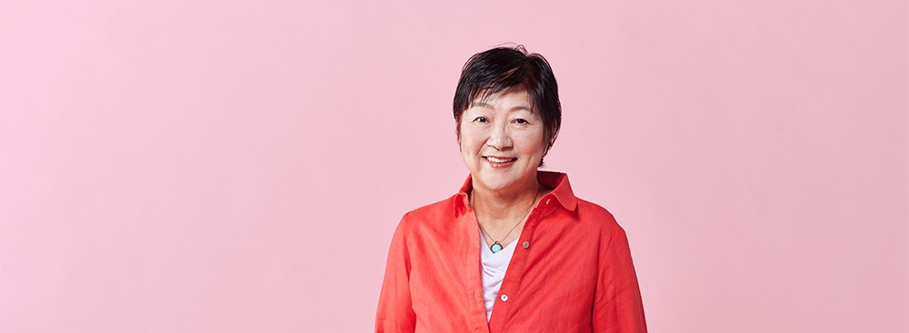
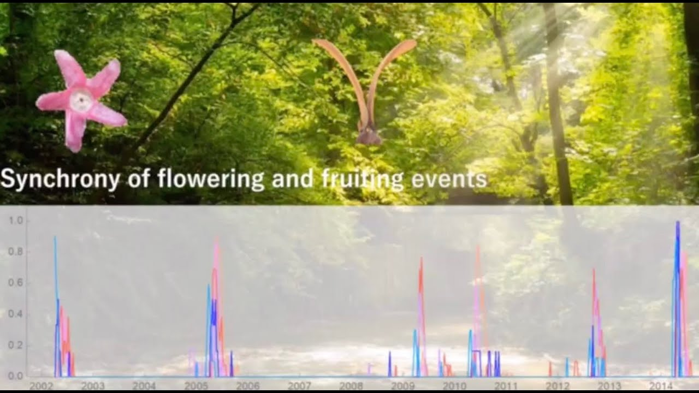
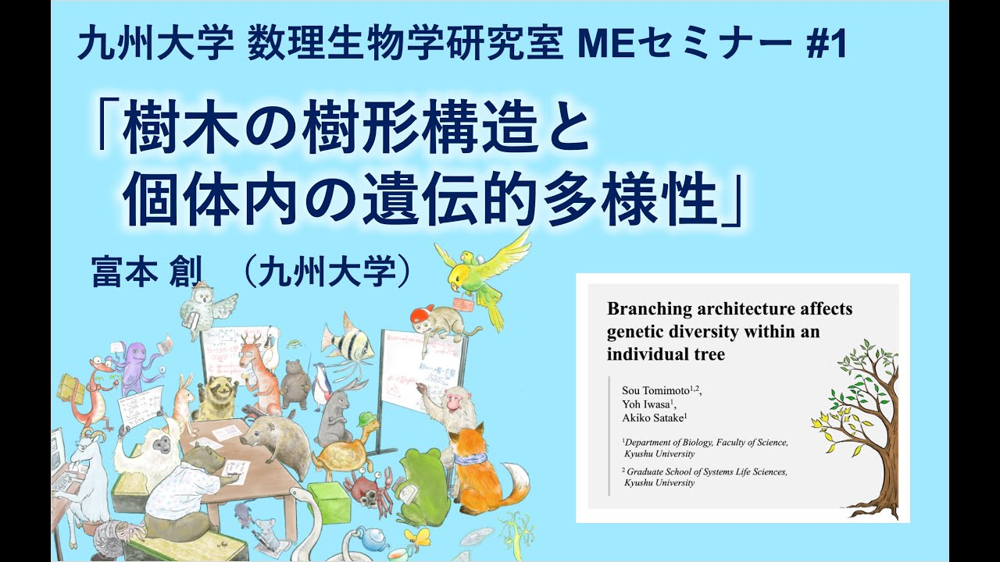
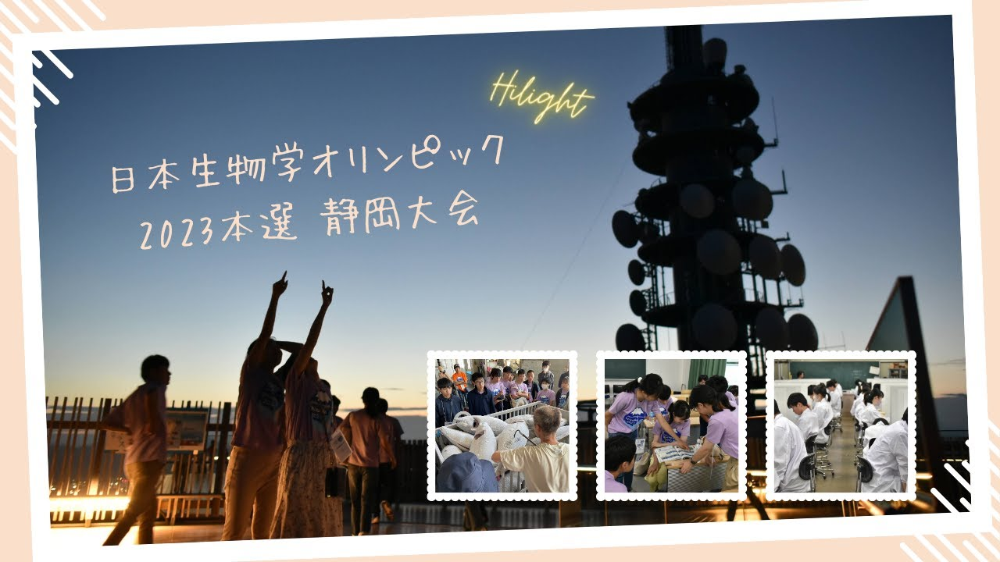
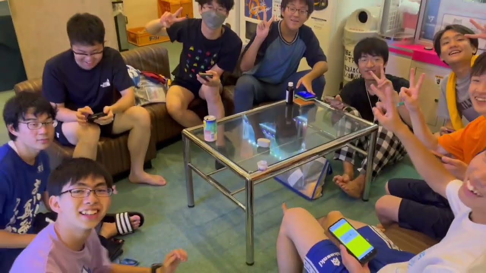

WEB SITEQUOBO PICTURES 公式サイト
企画・クリエイティブチーム / 映画製作・配給
映画『夏休みの地図』などを手掛けるクリエイティブチーム「QUOBO PICTURES」の公式Webサイトです。子役時代にご縁をいただいたチームの皆様のWebサイト立ち上げにあたり、Web構築・実装サポートのお手伝いに関わらせていただきました。
Webサイト・動画制作への参画・協力
これまでにクライアント様や研究室、大会運営組織の皆様とのご縁のなかで、Webサイト構築の支援や動画制作・映像編集、オープニング映像制作など、技術面・制作面でお手伝い・関わらせていただいたプロジェクトの記録です。
※すべて単独で制作したものではなく、共同制作者や運営チームの皆様と連携しながら、一部の制作・編集や実装サポートの形でお手伝いに関わらせていただいた作品です。
Webサイトの新規立ち上げや環境構築、実装支援などの形でお手伝いさせていただいたサイトです。

WEB SITE企画・クリエイティブチーム / 映画製作・配給
映画『夏休みの地図』などを手掛けるクリエイティブチーム「QUOBO PICTURES」の公式Webサイトです。子役時代にご縁をいただいたチームの皆様のWebサイト立ち上げにあたり、Web構築・実装サポートのお手伝いに関わらせていただきました。

WEB SITE米国アリゾナ州弁護士 近藤ユリ法律相談室
米国アリゾナ州弁護士・近藤ユリ様の公式法律相談室Webサイトです。オフィシャルサイトの新規開設にあたり、WordPressを用いたサイト環境の整備・Web構築のお手伝い（制作協力）を担当させていただきました。
研究室紹介、セミナーアーカイブのオープニング、大会ハイライトなど、映像制作・編集や演出の形でお手伝い・関わらせていただいた作品です。

VIDEO九州大学大学院 システム生命科学府 生物科学部門
自身が所属していた九州大学大学院数理生物学研究室の研究内容やラボの魅力を広く発信するための公式紹介映像です。研究室の先生方やメンバーと連携しながら、企画・構成・映像制作に関わらせていただきました。

VIDEO (OP)Mathematical Biology Lab. Kyushu Univ.（演者: 富本創 氏）
九州大学数理生物学研究室が主催するMEセミナーの配信アーカイブ動画です。本編の開始を彩るオープニング（OP）映像の制作・演出を担当・協力させていただきました。

VIDEO国際生物学オリンピック日本委員会（JBO） / 学生スタッフSCIBO
静岡大学にて3泊4日の合宿形式で開催された「日本生物学オリンピック2023（JBO2023）」本選閉会式上映ハイライト動画の再編集版です。学生運営組織SCIBOの運営副代表および広報制作スタッフとして、大会記録映像の制作・運営に関わらせていただきました。

VIDEO国際生物学オリンピック日本委員会（JBO） / 学生スタッフSCIBO
熊本大学にて開催された「日本生物学オリンピック2024（JBO2024）」本選の閉会式上映ハイライト動画です。学生スタッフSCIBOの一員として、内藤千晶氏と共に撮影素材の選定・映像編集などの制作業務に関わらせていただきました。